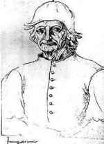

Jheronimus Bosch ca. 1450 - 1516
Jheronimus Bosch(beter bekend als Jeroen Bosch) Brabants schilder, geboren in Den Bosch, als Jeroen van Aecken. Hij leefde in een roerige tijd, met pestepidemieën, waarin veel mensen voor de ondergang van de wereld vreesden. In 1463 brandde een groot deel van zijn woonplaats af. Wellicht is dat van invloed geweest op zijn werk, dat nauwelijks aansluit bij bestaande stromingen en zowel stilistisch als thematisch geheel nieuw was. In tegenstelling tot het serene werk van zijn tijdgenoten gaat het fantastische werk van Bosch over angst, afschuw, zonde en rampspoed. Zijn talent maakte een dergelijke nieuwe stijl mogelijk.
Al tijdens zijn leven werd zijn kunst bewonderd, onder meer in Spanje: Filips de Schone van Spanje gaf de opdracht voor Het laatste oordeel.
Jeroen Bosch was lid van de voorname Broederschap van Onze Lieve Vrouwe, en ws. diep religieus. Zijn werk zit vol met religieuze symboliek. Van Bosch zijn 25 schilderijen en 8 tekeningen bekend. Slechts enkele daarvan zijn getekend met zijn naam, 'Jheronimus Bosch'.
Waarschijnlijk heeft hij zijn hele leven in Den Bosch gewoond. Hij was gehuwd met Aleid van de Meervenne, telg uit een welgestelde familie.